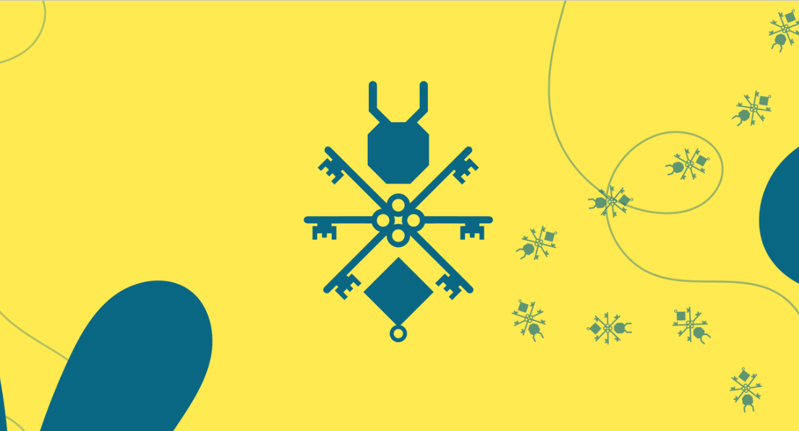

Netkey
Netkey was a small technology company where I served as CTO. The product was a 3D-printed NFC device that replaced the paper business card: one tap against a phone and your professional profile, portfolio and links were transferred, with Linktree handling the destination page.
The devices were customisable, so the object itself became part of how someone presented their personal brand, and printing them ourselves meant we could iterate on the physical design as fast as on the software. It was also, by a wide margin, a more sustainable way to exchange details than reprinting a stack of cards every time a job title changed.
As CTO I owned the technical side end to end: the NFC provisioning flow, the profile backend, and the 3D-printing pipeline that turned a design change into a physical unit the same afternoon. I also built and maintained the company website, and automated the internal workflows the business actually ran on (order handling, client communications and email operations), which in a company that small is the difference between shipping and drowning in admin. The company is no longer active, but it was where I first learned what it costs to ship something people hold in their hands rather than something that only runs on my machine.
- Year
- 2023–2024

Next: Telefónica